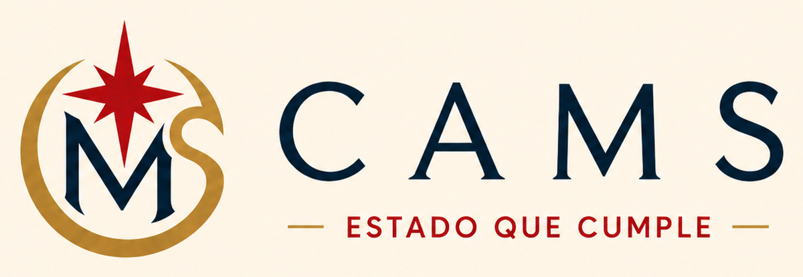
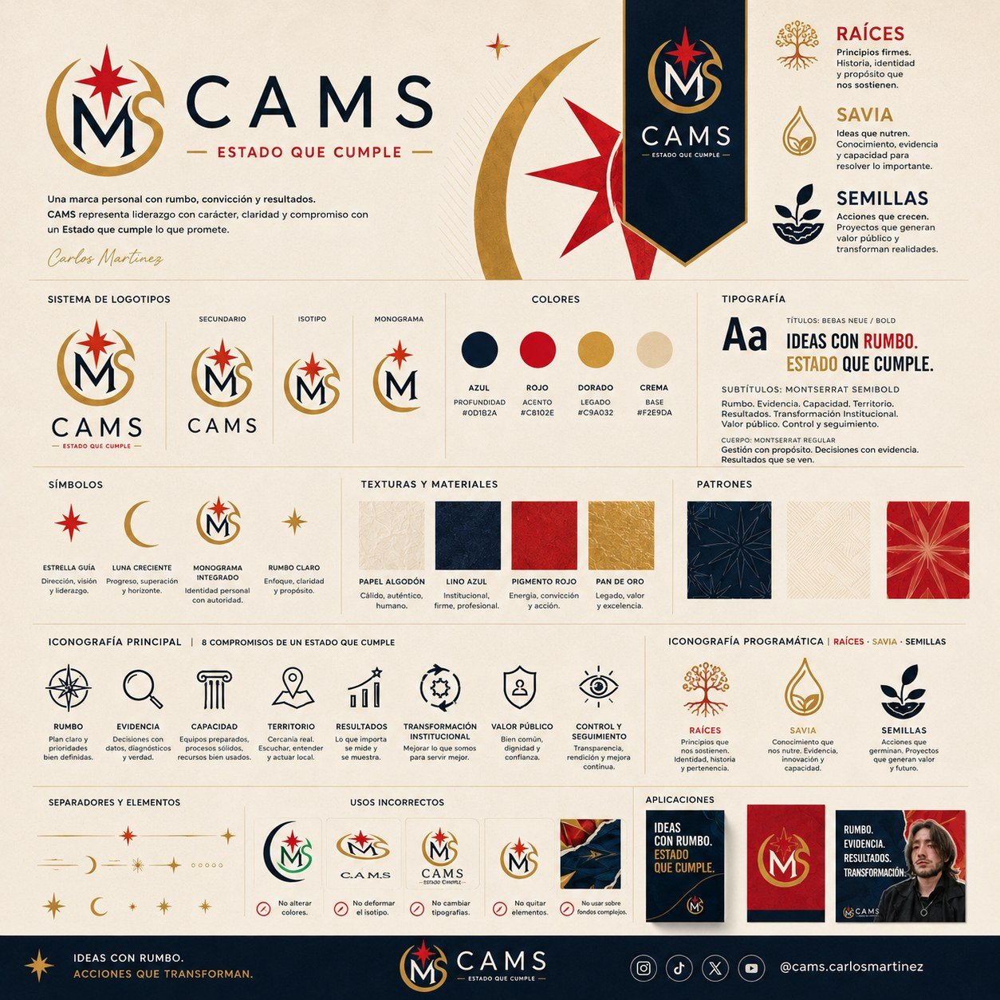

RAÍCES
Revisión de entidades, funciones, competencias, duplicidades, vacíos y obstáculos institucionales.

@cams.carlosmartinez
Del Estado de papel a la capacidad pública real.
Documentos, datos y propuestas sobre administración pública, capacidad estatal, Bogotá, juventud, función pública, movilidad y transformación institucional.
Propuesta pública
La marca se organiza alrededor de una idea simple: pasar de normas, diagnósticos y promesas a capacidades públicas reales. Eso exige instituciones con competencias claras, talento humano, presupuesto, datos, coordinación, seguimiento y corrección.
Revisión de entidades, funciones, competencias, duplicidades, vacíos y obstáculos institucionales.
Evaluación de madurez: talento humano, presupuesto, datos, procesos, coordinación y capacidad de implementación.
Pilotos y soluciones verificables con indicadores, responsables, aprendizajes y resultados públicos medibles.
Archivo público
Esta sección debe convertirse en el centro de consulta: trabajos académicos depurados, propuestas, bases, matrices, informes, presentaciones y publicaciones citables.
Documento base
Propuesta de madurez institucional y capacidad estatal para pasar de la norma escrita a resultados verificables.
Bogotá
Análisis sobre capacidad institucional, transporte público, infraestructura vial y planeación urbana.
PróximamenteJuventud
Representación juvenil, incidencia pública, transparencia, seguimiento institucional y gobierno abierto.
PróximamenteAcademia
Trabajos de asignatura convertidos en productos públicos: resumen, ficha técnica, referencias y advertencia académica.
PróximamenteAgenda de investigación
Instituciones capaces de entregar resultados, sostener políticas, evitar captura y corregir fallas.
Infraestructura, transporte, accesibilidad, intersecciones, financiación y coordinación distrital.
Representación juvenil, control social, incidencia, transparencia y pedagogía pública.
Debates sobre Estado, desarrollo, deuda pública, modelos económicos y experiencias históricas comparadas.
Sistema visual
La identidad visual usa una base institucional: crema, azul profundo, dorado y rojo. El objetivo no es verse como campaña improvisada, sino como una línea pública seria, reconocible y pedagógica.
Versión principal
CAMS
Estado que Cumple
Versión extendida
CAMS
Estado que Cumple
Del Estado de papel a la capacidad pública real.

Perfil
Estudiante de Administración Pública en la ESAP, con trabajo en participación juvenil, análisis institucional, política pública y debates sobre capacidad estatal. Su línea central, Estado que Cumple, busca traducir decisiones públicas en instituciones capaces, derechos efectivos y resultados verificables en el territorio.
Esta bio puede ajustarse según el uso: perfil académico, repositorio documental, LinkedIn, ponencia, hoja de vida o presentación pública.
Conversemos
Centraliza aquí tus redes y repositorios: Instagram, LinkedIn, Academia.edu, Zenodo, OSF, GitHub y correo público.